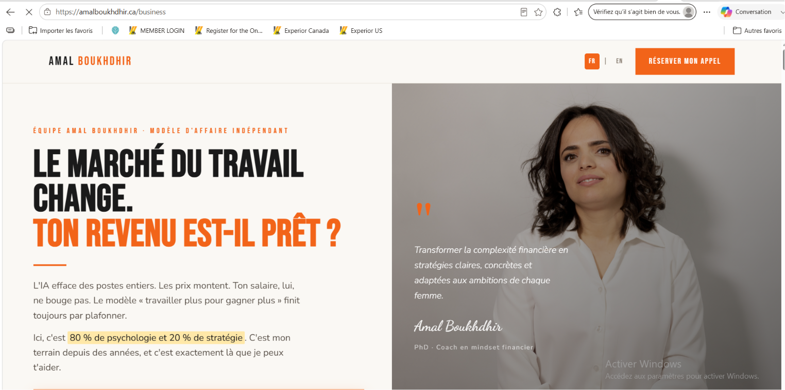

Pídele a Claude Code que cree un proyecto web con la tecnología JavaScript más reciente. Estas son las secciones a incluir:
1
Hero: tu mensaje principal + llamado a la acción.
2
Problema / solución: por lo que pasa tu clientea y cómo la ayudas.
3
Bio: quién eres, tu trayectoria, tu credibilidad.
4
Oferta / recurso: lo que puede consultar o descargar.
5
Contacto / reserva: botón de Calendly, WhatsApp o formulario simple.
6
FAQ: 3 a 5 preguntas cortas.
Prompt de ejemplo para dar en Claude Code:
"Usa los siguientes documentos en mi computadora:
1. Business Brain: C:/Users/boukh_2njb9wx/OneDrive/Documents/Claude/Projects/CLAUDE/coaching/active/website-sans-funnel/business-brain/business-brain.pdf
2. Identidad visual: [pega aquí la ruta o el contenido del archivo identite-visuelle.txt]
Crea un sitio web con la tecnología JavaScript más reciente. Basa el diseño en el Business Brain (color de marca, servicios, cliente ideal, voz, trayectoria) y en la identidad visual definida (logo, favicon, fuentes, colores).
Integra mi WhatsApp Business, mi enlace de reserva de citas mediante Calendly, y mi enlace de pago de Stripe para uno de mis servicios.
Genera una página web completa, mobile-first, con el sistema de diseño de mi identidad visual.
Secciones: hero, a quién ayudo, mi método, 1 a 3 servicios, bio, testimonio o resultado, FAQ, contacto.
Sin framework externo. Un solo archivo autónomo y simple. Hazlo como una diseñadora gráfica web senior, de manera profesional."
> Consejo: si Claude Code tiene dificultad para leer el PDF, dale la ruta del archivo business-brain.html, que es texto legible. Para la identidad visual, un archivo identite-visuelle.txt o un mensaje en el chat es suficiente.
💡
Consejo: copia el enlace de esta página (
https://amalboukhdhir.ca/business), dáselo a Claude Code y pídele que reproduzca exactamente esta estructura y esta forma de trabajar. Una vez que funcione para ti, podrás pasar a cosas más complejas.
🖼️
Aspecto de mi sitio web: así se ve esta página una vez en línea.

⚠️
Trampa a evitar: no intentes escribir 10 páginas. Un sitio que convierte tiene una página de inicio clara, una página de recursos y una forma de contactarte. El resto viene después.
Opcional — si Claude Code te propone Next.js: Claude Code puede proponerte Next.js (la tecnología JavaScript más reciente basada en React) para generar tu sitio. Aunque no sea necesario para una vitrina simple, aquí están los pasos si eliges esta opción en Windows:
1
Ve a nodejs.org y descarga la versión LTS recomendada para Windows.
2
Ejecuta el instalador (.msi) y haz clic en Next → Next hasta el final.
3
Reinicia tu computadora si el instalador te lo pide.
4
Abre PowerShell: presiona Windows, escribe PowerShell, luego inicia Windows PowerShell.
5
Verifica la instalación escribiendo:
node --version y luego npm --version
6
Ve a la carpeta de tu proyecto:
cd C:\Users\tu-cuenta\Documents\amal-site
7
Lanza el proyecto Next.js creado por Claude Code:
npm run dev
8
Abre tu navegador en la dirección mostrada, generalmente http://localhost:3000.
Nota: para este tutorial, un simple archivo index.html es suficiente. Next.js es opcional; es útil si más adelante quieres un blog, formularios dinámicos o páginas más complejas.